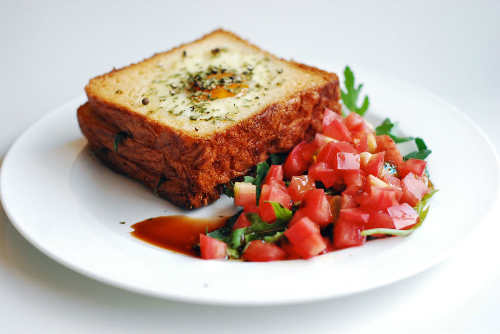

Lazy Chef 30-min Recipes
Cooking has never been so easy yet tasty.
JUST BE LAZY.
BREAKFAST
Good Old Fashioned Pancakes
Ready in: 20 min
Ready in: 20 min
- In a large bowl, sift together the flour, baking powder, salt and sugar. Make a well in the center and pour in the milk, egg and melted butter; mix until smooth.
- Heat a lightly oiled griddle or frying pan over medium high heat. Pour the batter onto the griddle, using approximately 1/4 cup for each pancake. Brown on both sides and serve hot.

Breakfast Waffles
Ready in: 20 min
Ready in: 20 min
- Preheat waffle iron. Beat eggs in large bowl with hand beater until fluffy. Beat in flour, milk, vegetable oil, sugar, baking powder, salt and vanilla, just until smooth.
- Spray preheated waffle iron with non-stick cooking spray. Pour mix onto hot waffle iron. Cook until golden brown. Serve hot.

Autumn Apple Salad
Ready in: 10 min
Ready in: 10 min
- In a medium bowl, stir together the apples, almonds, cranberries, cherries and yogurt until evenly coated.

Sunshine Toast
Ready in: 15 min
Ready in: 15 min
- Melt 1 tablespoon butter in a small skillet over medium heat.
- Create a circular hole in the middle of the bread. Butter the bread lightly and fry it on one side, and then turn it over.
- Crack the egg into the hole in the middle of the bread and fry quickly. Serve warm.
Fried Egg Sandwich
Ready in: 15 min
Ready in: 15 min
- In a large skillet, melt butter over medium high heat. Crack eggs in pan and cook to desired firmness. Just before eggs are cooked, place a slice of cheese over each egg.
- After cheese has melted, place each egg on a toasted slice of bread. Season eggs with salt and pepper. Spread mayonnaise and ketchup on remaining slices of bread and cover eggs with bread to make 4 sandwiches. Serve warm.
Grilled Cheese Sandwich
Ready in: 20 min
Ready in: 20 min
- Preheat skillet over medium heat. Generously butter one side of a slice of bread. Place bread butter-side-down onto skillet bottom and add 1 slice of cheese. Butter a second slice of bread on one side and place butter-side-up on top of sandwich.
- Grill until lightly browned and flip over; continue grilling until cheese is melted. Repeat with remaining 2 slices of bread, butter and slice of cheese.